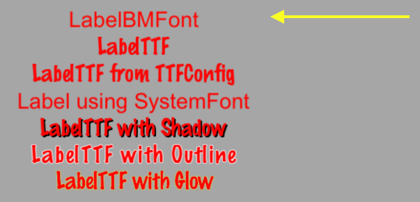
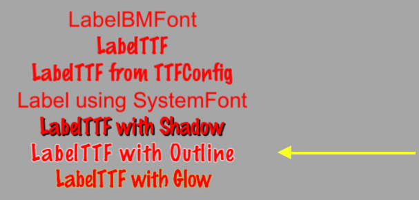
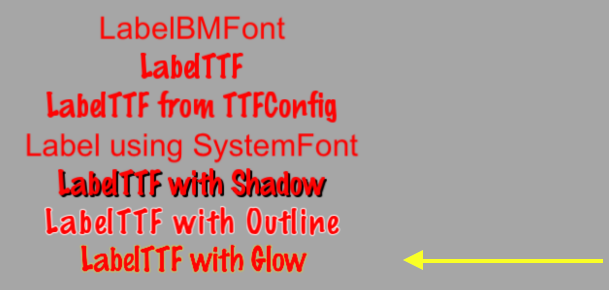

Label
Cocos2d-x provides a Label object that can create labels using true type,
bitmap or the built-in system font. This single class can handle all your Label
needs.
Label BMFont
BMFont is a label type that uses a bitmap font. The characters in a bitmap font
are made up of a matrix of dots. It is very fast and easy to use, but not
scalable as it requires a separate font for each size character. Each character
in a Label is a separate Sprite. This means that each character can be rotated,
scaled, tinted, have a different anchor point and/or most any other property changed.
Creating a BMFont label requires two files: a .fnt file and an image
representation of each character in .png format. If you are using a tool like
Glyph Designer these files are created automatically for you. Creating a
Label object from a bitmap font:
auto myLabel = Label::createWithBMFont("bitmapRed.fnt", "Your Text");

All of the characters in the string parameter should be found in the provided
.fnt file, otherwise they won't be rendered. If you render a Label object and
it is missing characters, make sure they exist in your .fnt file.
Label TTF
True Type Fonts are different from the bitmap fonts we learned about above. With true type fonts the outline of the font is rendered. This is convenient as you do not need to have a separate font file for each size and color you might wish to use. Creating a Label object that uses a true type font is easy. To create one you need to specify a .ttf font file name, text string and a size. Unlike BMFont, TTF can render size changes without the need for a separate font files. Example, using a true type font:
auto myLabel = Label::createWithTTF("Your Text", "Marker Felt.ttf", 24);

Although it is more flexible than a bitmap font, a true type font is slower to render and changing properties like the font face and size is an expensive operation.
If you need several Label objects from a true type font that all have the
same properties you can create a TTFConfig object to manage them. A TTFConfig object allows you to set the properties that all of your labels would have in common. You can think of this like a recipe where all your Label objects will use the same ingredients.
You can create a TTFConfig object for your Labels in this way:
// create a TTFConfig files for labels to share
TTFConfig labelConfig;
labelConfig.fontFilePath = "myFont.ttf";
labelConfig.fontSize = 16;
labelConfig.glyphs = GlyphCollection::DYNAMIC;
labelConfig.outlineSize = 0;
labelConfig.customGlyphs = nullptr;
labelConfig.distanceFieldEnabled = false;
// create a TTF Label from the TTFConfig file.
auto myLabel = Label::createWithTTF(labelConfig, "My Label Text");

A TTFConfig can also be used for displaying Chinese, Japanese and Korean
characters.
Label SystemFont
SystemFont is a label type that uses the default system font and font size.
This is a font that is meant not to have its properties changed. You should think
of it as system font, system rules. Creating a SystemFont label:
auto myLabel = Label::createWithSystemFont("My Label Text", "Arial", 16);

Label Effects
After you have your Label objects on screen you might want to make them a bit
prettier. Perhaps they look flat or plain. Thankfully you don't have to create
your own custom fonts! Label objects can have effects applied to them. Not all
Label objects support all effects. Some effects include shadow, outline
and glow. You can apply one or more effects to a Label object easily:
Label with a shadow effect:
auto myLabel = Label::createWithTTF("My Label Text", "myFont.ttf", 16);
// shadow effect is supported by all Label types
myLabel->enableShadow();

Label with a outline effect:
auto myLabel = Label::createWithTTF("My Label Text","myFont.ttf", 16);
// outline effect is TTF only, specify the outline color desired
myLabel->enableOutline(Color4B::WHITE, 1));

Label with a glow effect:
auto myLabel = Label::createWithTTF("My Label Text", "myFont.ttf", 16);
// glow effect is TTF only, specify the glow color desired.
myLabel->enableGlow(Color4B::YELLOW);
